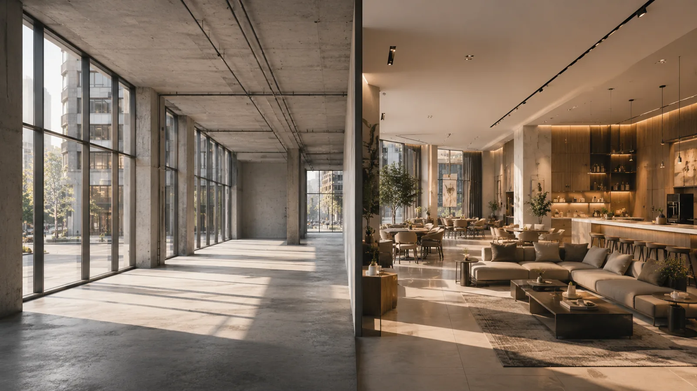
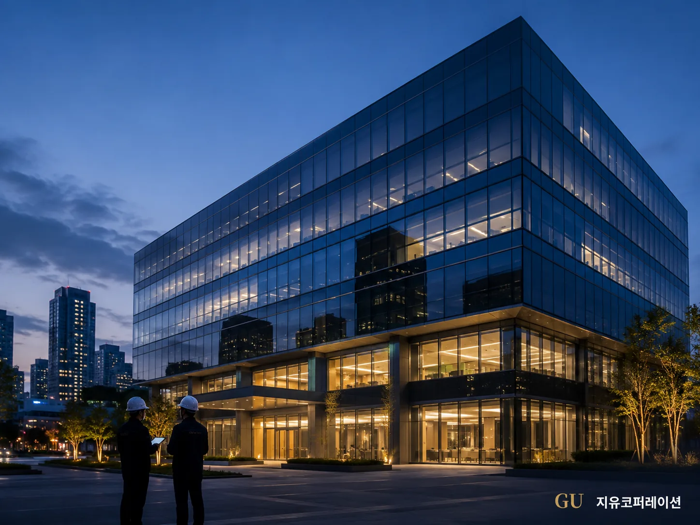

지유코퍼레이션 연계법인 · 건물 PM · FM 및 공실 솔루션
건물은 시스템으로 관리하고,공실은 끝까지 해결합니다
지유공간개발은 시설관리(FM)와 자산관리(PM)로 건물이 매일 문제없이 돌아가게 하고, 그 관리 데이터 위에서 공실과 임차사를 관리합니다. 비어 있는 공간은 임대로 채우거나 직접 개발해 수익공간으로 바꾸고, 그 결과가 건물의 자산가치로 남게 하는 것이 이 회사의 일입니다.

관리회사이면서, 공실을 직접 해결하는 회사입니다.
관리회사는 건물을 돌리기만 하고, 중개사는 계약이 끝나면 떠나고, 인테리어 회사는 준공하면 손을 뗍니다. 건물주는 그 사이에서 공실과 임차사 문제를 혼자 떠안았습니다. 지유공간개발은 관리를 맡은 회사가 공실까지 책임지는 구조로 그 틈을 없앱니다.
관리부터 시스템으로 돌립니다
법정점검, 예방점검, 미화·보안·주차, 관리비와 예산, 임대차 일정을 한 체계 안에서 운영합니다. 누가 언제 무엇을 했는지 기록이 남고, 그 기록이 다음 판단의 근거가 됩니다. 사람이 바뀌어도 관리 수준이 흔들리지 않는 것이 목표입니다.
공실은 관리의 연장에서 봅니다
공실은 어느 날 갑자기 생기지 않습니다. 만기 관리와 임차사 응대가 느슨해질 때 생깁니다. 관리 중인 건물의 임대차 일정과 임차사 상태를 먼저 챙기고, 그래도 비면 정해진 순서로 임대 마케팅과 공간 개선을 진행합니다.
자산가치는 숫자로 확인합니다
임대율, 공실 기간, 수납률, 관리비, 순영업수익(NOI)을 매달 보고합니다. 임대로 채울 수 없는 공간은 업종과 수익모델을 다시 설계해 직접 개발하고, 개발 전후의 수치를 남겨 자산가치가 실제로 올랐는지 보여드립니다.
세 층으로 일합니다
아래층이 없으면 위층은 서지 않습니다. 관리가 되어야 공실이 관리되고, 공실이 관리되어야 개발과 자산가치 증대가 가능합니다.
- 1
-
2
공실관리 · 임차사관리 · 공실해결
비지 않게 관리하고, 비면 빨리 채우는 일입니다. 만기 12개월 전부터 갱신을 챙기고, 임차사의 민원과 요청을 정해진 기준으로 응대합니다. 공실이 생기면 조건 조정, 공간 정비, 임대 마케팅을 순서대로 진행합니다.
-
3
공실개발 · 자산가치 증대 최종 목표
임대만으로 채울 수 없는 공간은 업종과 수익모델을 다시 설계해 직접 개발합니다. 인테리어 PM, 오픈 세팅, 운영, 노후설비 개선이 여기에 붙습니다. 결과는 임대수익과 순영업수익, 그리고 건물의 평가가치로 확인합니다.
건물 하나를 맡으면 이렇게 진행됩니다
관리 진단에서 자산가치 보고까지 한 회사가 이어서 맡기 때문에, 건물주는 관리회사·중개사·인테리어 회사·운영사를 따로 상대하지 않아도 됩니다.
- 1
관리 진단
시설 상태, 법정점검 이력, 관리비 구조, 임대차 현황을 현장에서 확인합니다.
- 2
관리 체계 구축
FM·PM 범위와 인력, 점검 주기, 보고 양식을 정하고 운영을 시작합니다.
- 3
공실 · 임차사 정리
층별 임대 조건, 만기 일정, 임차사 이슈를 한 표로 정리하고 우선순위를 정합니다.
- 4
공실 해결
조건 조정과 임대 마케팅으로 채우거나, 안 되면 개발 대상으로 넘깁니다.
- 5
개발 · 오픈
업종·수익모델 설계, 인테리어 PM, 오픈 세팅을 거쳐 수익공간으로 바꿉니다.
- 6
자산가치 보고
임대율·수납률·NOI·관리비를 매달 보고하고, 다음 개선안을 제안합니다.
전부 맡기실 필요는 없습니다. 관리만, 공실 해결만, 개발만 따로 계약할 수 있습니다. 상품 구성과 진행절차 보기
사업영역
건물관리를 주업으로 두고, 그 위에 공실·임차사 관리와 개발·밸류업 실행을 얹었습니다. 세 묶음 일곱 가지입니다.
1건물관리 매일 돌아가게 하는 일
2공실 · 임차사 비지 않게, 비면 빨리 채우는 일
3개발 · 밸류업 실행 자산가치를 올리는 일
누구와 일하는 회사인가
건물주 · 자산주
건물관리(FM·PM)만 맡기셔도 되고, 공실 해결과 개발까지 이어서 맡기셔도 됩니다. 임대율과 순영업수익을 올리고 관리비를 줄이는 것이 목표이며, 관리 중인 건물의 공실은 관리 데이터를 바탕으로 먼저 제안드립니다.
건물주 솔루션임차인 · 창업자
업종에 맞는 공간 기획과 인테리어 PM, 오픈 이후 운영 지원까지. 공사비를 지키면서 운영이 되는 공간을 만듭니다.
임차인 · 창업자 솔루션관리회사 · 중개법인 · 투자자
중개법인과는 임대 마케팅과 공실 개발을 나눠 맡고, 관리회사와는 관리 계약과 묶은 공동 제안이 가능합니다. 매입 전 시설·공실·관리비·운영을 함께 검토하는 투자자 지원도 합니다.
파트너 · 투자자 솔루션
35년 넘게 건물을 관리해 온 회사와 같이 일합니다
지유공간개발은 ㈜지유코퍼레이션의 연계법인입니다. 지유코퍼레이션은 PM·FM·D.D를 중심으로 오피스, 물류센터, 리테일, 병원 등 다양한 건물을 관리하고 있습니다. 관리 현장에서 나오는 공실과 노후, 수선 이슈가 지유공간개발의 출발점이 되고, 지유공간개발이 만든 공간은 다시 지유코퍼레이션의 관리 체계 안에서 운영됩니다.
- 37개 동관리 건물
- 195,000평관리 연면적
- 12개 분야관리 매뉴얼 · SOP
위 수치는 연계법인 ㈜지유코퍼레이션의 관리 실적 기준입니다. 지유공간개발의 직접 수행 실적은 프로젝트가 쌓이는 대로 별도로 공개합니다.
두 회사의 역할 분담 보기